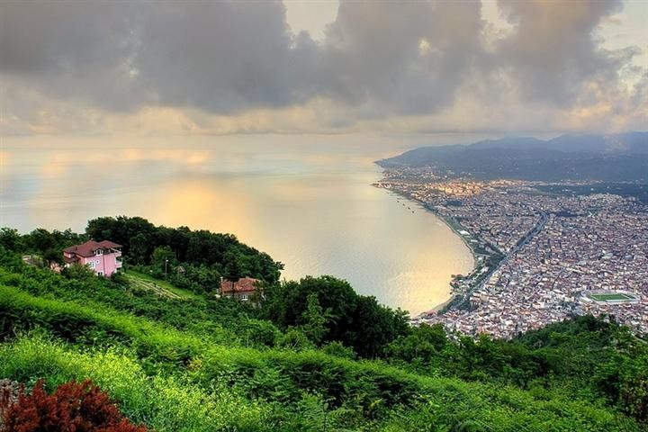

BOZTEPE
Boztepe Hakkında Genel Bilgi
Ordu şehri Boztepe’nin yamaçlarına serilmiştir. Denizden 450 mt. yükseklikte olup, İlimizin tüm güzelliklerini, Karadeniz’in muhteşemliğini Boztepe’den seyretmek doyumsuzdur. İl merkezine 6 km. mesafede olup asfalt yolla ve dilerseniz teleferikle ulaşmak mümkündür. Yeme içme ve dinlenme tesisleri ile ormanlık piknik alanları mevcuttur.
Boztepe'ye nasıl gidilir?
Boztepeye ulaşmak için birkaç farklı alternatifiniz bulunuyor. Eğer şehre araba ile geldiyseniz Boztepe’ye de kendi arabanız ile çıkabilirsiniz. Boztepe şehir merkezine yakın bir konumda bulunuyor. Bu nedenle kolaylıkla nasıl gitmeniz gerektiğini bulacaksınızdır.
Ancak çok daha keyifli bir şekilde Boztepe’ye ulaşmak istiyorsanız şehir merkezinde bulunan teleferiği tercih edebilirsiniz. Teleferik ile yolculuk etmenin keyfini ve heyecanını yaşayabilir aynı zamanda yol boyunca manzaranın tadını çıkartabilirsiniz. Teleferiğe doğrudan şehir merkezinden binebiliyorsunuz.
Boztepe'nin Konumu
Boztepe Teleferik
Ordu sahilinden 509 metre Boztepe'ye yükseklikteki Boztepe'ye 7 dakika içinde teleferik ile ulaşılabiliyor. Teleferikten indikten sonra, Boztepe'den Karadenize doğru bakıldığında, adeta tepeden denize doğru yuvarlanıverecekmiş gibi hissediyor insan.
Yamaç Paraşütü
Ordu Boztepe‘de, Royal 52 Boztepe tesislerinin alt tarafından yamaç paraşütü yapılabilmektedir.
Boztepe, bu sporun ülkemizde yapıldığı önemli yerlerden biridir.
Boztepe'den Görüntüler
